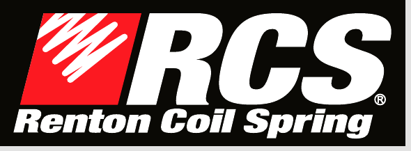

Renton Coil Spring

- Designed and fabricated an ESP32-based piezoelectric fracture-detection system for continuous spring-cycle testing, enabling 40% more runtime, automated failure alerts, and improved fatigue data collection.
- Evaluated new titanium suppliers using cycle testing, analyzing fatigue life and manufacturability to validate use in springs for aerospace applications and adherence to aerospace safety and quality standards.
- Led and supported R&D initiatives to improve quality-control processes and used geometric dimensioning and tolerancing skills to develop new technical drawings for manufacturing fixtures and specialized tooling.
- Collaborated with engineers and an FAA-certified repair station to expand spring maintenance, repair, and overhaul capabilities and develop qualification plans for adding 12 Boeing and Airbus part numbers.
- Interpreted Boeing and Airbus technical documentation to develop and implement in-house bearing and bushing installation procedures for terminal extension springs.
Manufacturing
Mechanical Design
Testing
ESP32
Fatigue
GD&T
Aerospace MRO